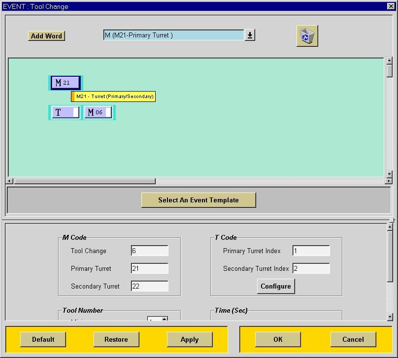

Tool Change (Mill)
When Tool Change event is selected, the above dialog will be displayed. You can now define the blocks and parameters for the Tool Change function. The tool change function is not an event. The blocks and parameters defined here are used in other sequences.
You can modify the blocks to be output by adding, editing or deleting words to the template. See the description of creating a block for details on editing the blocks. The Tool Change event blocks are used in the Automatic Tool Change event of the Start of Operation sequence. Any changes made here will affect the blocks being used in the Start of Operation sequence or any other sequence. Any blocks created in any event dialog may be used by any sequence or custom command.
Note the yellow highlight of the T code word. This tells you what the pre-defined context of that word. In this case it is the tool pre-select word for the next tool.
You can change the tool change M code in this dialog. If you change the M code here, it will also be changed in every block that references the Tool change M code.
You can define the minimum and maximum tool numbers that can be used by this machine tool. You can assign a time to be added to the total machining time for each tool change.
You can specify a Z position that the tool change will cause the tool to rectract to. This Z position is used in subsequent work plane change logic. This is useful if your M06 command causes the machine tool to retract. This way the postprocessor knows where the tool actually is.
If you select the Tool Code Configure
button, you will be able to specify how the Tool
Number and Length Offset Number
will be formatted. Notice that the current format is displayed in
the upper portion of the dialog. The following formats and the corresponding
options are available:
| T01 | Tool Number Only | |
| T0102 | Tool Number and Length Offset Number | |
| T0201 | Length Offset Number and Tool Number |
Tool Change (Lathe)
The tool change for mill and lathe behave the same except for the default blocks. There are also some differences in the parameters.
You can modify the blocks to be output by adding, editing or deleting words to the template. See the description of creating a block for details on editing the blocks. The Tool Change event blocks are used in the Automatic Tool Change event of the Start of Operation sequence. Any changes made here will affect the blocks being used in the Start of Operation sequence or any other sequence. Any blocks created in any event dialog may be used by any sequence or custom command.
Note the yellow highlight of the M21 word. This will output an M21 for the Primary Turret and an M22 for the Secondary Turret. You can change the M code numbers for the Primary and Secondary Turrets or remove the block entirely by deleting the word from the dialog.
You can change the tool change M code in this dialog. If you change the M code here, it will also be changed in every block that references the tool change M code.
You can define the minimum and maximum tool numbers that can be used by this machine tool. You can assign a time to be added to the total machining time for each tool change.
You can specify what the turret index will be for each turret and and then specify how it will be used in the tool code.
If you select the Tool
Code Configure button, you will be able to specify how the Tool
Number and Length Offset Number
will be formatted. Notice that the current format is displayed in
the upper portion of the dialog. The following formats and the corresponding
options are available:
| T01 | Tool Number Only | |
| T0102 | Tool Number and Length Offset Number | |
| T11 | Turret Index and Tool Number | |
| T1102 | Turret Index, Tool Number and Length Offset Number |
Length Compensation
This dialog allows you to specify the words in the Length Compensation blocks and the parameters. These block(s) will be output when the User Defined Event SET/ADJUST,n is specified. These blocks can also be used to output Length Compensation as part of the Start of Operation Sequence.
You can specify the G code number that will be output with the Length Compensation code. For mill only a G43 will be in the default block. However, you can configure the Length Compsensation blocks as your machine tool requires it.
You can specify the minimum and maximum Length Offset Register numbers in this dialog.
You can use the configure option to configure how your T and H codes will be output. See the Tool Configuration dialog for details.
Set Modes
This dialog allows you to define the G codes for incremental and absolute output modes. The default setting will output a G90 when the User Defined Event SET/MODE,ABSOL is programmed and a G91 when the User defined Event SET/MODE,INCR is programmed. If you do not specify any output in this dialog and instead include the G90/G91 word in the motion blocks, you will get the G90/G91 code out with motion.Spindle RPM
This dialog allows you to define the NC code needed to start the spindle in RPM mode. If this is a lathe postprocessor then the default event will have a G97 word in it. You can define the M code needed to turn on the spindle direction either clockwise (CW) or counterclockwise (CCW). You can also set the maximum and minimum spindle RPM in this dialog.
If there is a User Defined Event to turn on the spindle, then the blocks defined in this dialog will be output. However, most users will use the feeds and speeds functionality in the system to specify the spindle speed. In this case, there will be no event, only data made available to the postprocessor at the Start of Operation. The recommended method of output is then to include the spindle start information in the Operation Start Sequence with the tool change or initial move.
Spindle Ranges
You can also define the number of ranges and how you machine tool determines the spindle range. The pull-down dialog in the Spindle Range Control section allows you to select from the following choices:None
This option is for machine tools that automatically determine the range, have only a single spindle range or control the range manually.Separate M Code

This option allows you specify a specific M code that will be used for each range. The M code will change depending on the range that is programmed. For example, for range 1, the system has defined 41, now that value will be used and an M41 will be output. Note that you must place the correct word into the output sequence, either Operation Start or in the Spindle RPM event if you are using post commands.
Range Code with M code
This option allows you to output the range code with the spindle direction code. With a range code of one and a spindle direction of clw, the M code will be range code * 10 + the spindle direction code of 3 for a value of 13. So this will result in an M13. There is no separate M code for range in this case.
This option allows you to output the range code with the spindle speed code. There are only two ranges allowed. With a range 1 and a spindle spped of 100, the S code will be S100. With a range 2 and and spindle speed of 500, the S code would be S-500. There is no separate M code for range in this case.
Note that all of these special codes are done by formulas in the words themselves. If you have some specific requirement for combining range, direction or speed parameters, a formula may be used to calculate what you need.
Spindle CSS
This dialog will allow you to determine the words and blocks that will start your machine tool in constant surface speed. You can also set the G code for SFM (Usually 96), the G code for maximum RPM during SFM (Usually 92 or 50) and the maximum RPM that is allowed during SFM.
There are usually two blocks required to turn on SFM, the first one listed here is the G92 S9999 block. This block sets the maximum RPM allowed for this operation. If you wish to define the maximum RPM only once, you can move this block to the Start of Program sequence. The second block listed here (G96 S M03) is the actual spindle start in SFM mode.
If the spindle speed data comes from the feeds and speeds function of Unigraphics, then there will be no spindle event. The spindle data will just be passed as operation information and will be available at the Start of Operation sequence. You must attach the spindle output blocks to the tool change, initial motion or first cut blocks.
Most users prefer to pre-start their machine tool in RPM mode at the RPM that the machine tool would be in at the first cut. This RPM is made available to your post so that this pre-start block may be output. We have included two custom commands that may be used to achieve this functionality and are included as default in all default lathe postprocessers.
Spindle Off
This dialog allows you to specify how the spindle is turned off. Unless you add a UDE to the End Post commands in the Operation Create dialog you will not automatically get an M05 output in your program. You can get the M05 output in one of two ways, include a UDE in your operation or add it to a sequence such as the End of Operation sequence.
Coolant On
This dialog will define the blocks needed to turn on the coolant for your operation. The code being output will either be M08, M08, M07 or M08 respectively depending on whether the UDE COOLNT/ON, COOLNT/FLOOD, COOLNT/MIST or COOLNT/TAP was included in the operation as a Start Post command or assigned to one of the objects in the setup.
If the Coolant UDE was included in the Start Post of an operation, then the Coolant event will occur after the tool change in the sequence defined by the markers. In this case you cannot use the information in the Coolant UDE until after the event occurs. You will then need to output this code with the Initial Move.
If the Coolant UDE was assigned to an Unigraphics setup object (such as tool, machine tool, carrier, etc.) then that Coolant event will occur before the start of operation and the Coolant data will be available for the entire operation.
Coolant Off
This dialog allows you to specify how the coolant is turned off.
Unless you add a UDE to the End Post commands in the Operation Create dialog
you will not automatically get an M09 output in your program. You
can get the M09 output in one of two ways, include a UDE in your operation
or add it to a sequence such as the End of Operation sequence.
Inch Metric Modes
This dialog will allow you to define the G codes for Inch and metric output modes.
Feedrates (Lathe)
This dialog allows you to define how the feedrates will be controlled for lathes. You can specify the feedrate mode G-code that determines the mode (IPM, IPR) that your lathe will output. For the feedrate mode G-codes to output, the word must be included in every motion block. The default lathe postprocessors include this as basic functionality. You can also define the format and the maximum and minimum feedrate value that is valid within each mode. See the format section for details on how to specify and edit formats. The post will also give a warning if the IPR value and the current spindle RPM value exceed the maximum IPM value or is less than minimum IPR value.
By default your post will output IPR mode when you specify an IPR feedrate
for a specific motion and will output IPM mode when you specify an IPM
feedrate for a specific motion. The UDE that controls this function
is the SET/MODE
command. SET/MODE,OFF is the default mode and means that the feedrate
output mode will be the same as the feedrate mode for that motion.
SET/MODE,IPM means that all feedrate output will be output in IPM mode
regardless of the input feedrate mode. Likewise SET/MODE,IPR means
that all feedrate output will be output in IPR mode regardless of the input
feedrate mode. You can also get inverse time feedrates (FRN) output
by specifying the UDE SET/MODE,INVERS.
Feedrates (Mill)
This dialog allows you to define how the feedrates will be controlled your three axis mill. You can specify the feedrate mode G-code that determines the mode (IPM, FRN) that your mill will output. For the feedrate mode G-codes to output, the word must be included in every motion block. The default three axis mill postprocessors will not output feedrate mode G codes. You can also define the formats and the maximum and minimum feedrate value that is valid within each mode. See the format section for details on how to specify and edit formats.
Your post will output IPM mode when you specify either an IPR feedrate
or an IPM feedrate for a specific motion. You can only get
inverse time feedrates (FRN) output by specifying the UDE SET/MODE,INVERS.
To turn off FRN output mode, use the
UDE SET/MODE,OFF. If your post needs the G94/G93 codes output, you
will need to add the Feedrate Mode Word to each motion block event.
Feedrates (Mill 4/5 axis)
This dialog will allow you to configure how your post will control the feedrates for the linear and rotary axes. This dialog can be used for indexing as well as contouring rotary axes. You can define the feedrate mode G-codes, formats and maximum and minimum feedrates for each of the feedrate modes. See the format section for details on how to specify and edit formats.
The default four and five axis postprocessors include the G93/G94 in all motion blocks. If you do not need these codes you can either edit all of the motion blocks and remove the feedrate mode G-code word from each block or go to the word sequencing dialog to deactivate it globally.
The feedrate mode can be specified for all combinations of whether there is a linear move in a motion block, whether there is a rotary move in a motion block and whether the move is a rapid positioning move or a linear cutting move. It is very common to have all of the options set to IPM mode for positioning tables. For full five axis machine a common requirement is to set all the linear output modes to FRN and all of the positioning output modes to IPM. Many controls also need to have (Degrees Per Minute) DPM mode for moving the rotary axes.
See the machine tool section for specifying the DPM and rotary axes parameters.
Cutcom On
This dialog allows you to define the output and parameters to activate cutter compensation. You can specify the G-codes for cutter compenation to left or right of the toolpath, the maximum and minimum values for the cutter compenation register and the plane code that will be output.
There are two basic methods for outputting the cutter compensation codes. One way is the to output the code immediately in a block by themselves. This is the default method. The other way is to use this dialog only to specify parameters and define G-codes and output all of the cutter compensation words in the linear motion block. To use the second method, you must delete all the words from this event and make sure that all these words are in the linear motion block. By default all of these codes are also in the linear motion block as well. These codes are modal and are only output once, so no duplicate output results. However, if you delete the cutter compensation codes from this dialog, the codes will only be output by the linear motion block.
Cutcom Off
This dialog allows you to specify the G-code to be output for turning off cutter compensation. The system will output all necessary CUTCOM/OFF UDEs automatically. However, if want additional G40 codes output, you can add them to the appropriate sequences to insure that cutter compensation is not active.
Delay (Lathe)
This dialog defines the output for causing a dwell to occur on your
lathe machine tool. You can define the G-code for seconds or revolution
mode and the format of the dwell code for both seconds and revolution mode.
You have the following options for the dwell output mode.
Seconds Only -- this mode will only
use the seconds G-code and seconds format for all dwell output.
Revolutions Only -- this mode
will only use the revolutions G-code and seconds format for all dwell output.
Depends On Feedrate -- this
mode will use the seconds G-code and seconds format when in feedrate IPM
mode and will use the revolutions G-code and seconds format when in IPR
mode for all dwell output.
Opstop
This dialog will allow you to specify the output when the UDE OPSTOP event is handled.
Load Tool
This event is by default not handled and is included here only to support legacy operations. All the data needed for tool change is available in the tool change event itself and UDEs that are assigned to the tool, machine tool and carriers in the setup. If the LOAD/TOOL UDE needs to be handled, the blocks can be constructed in this dialog.Stop
This dialog can be used to define the output required when the UDE STOP event is handled.